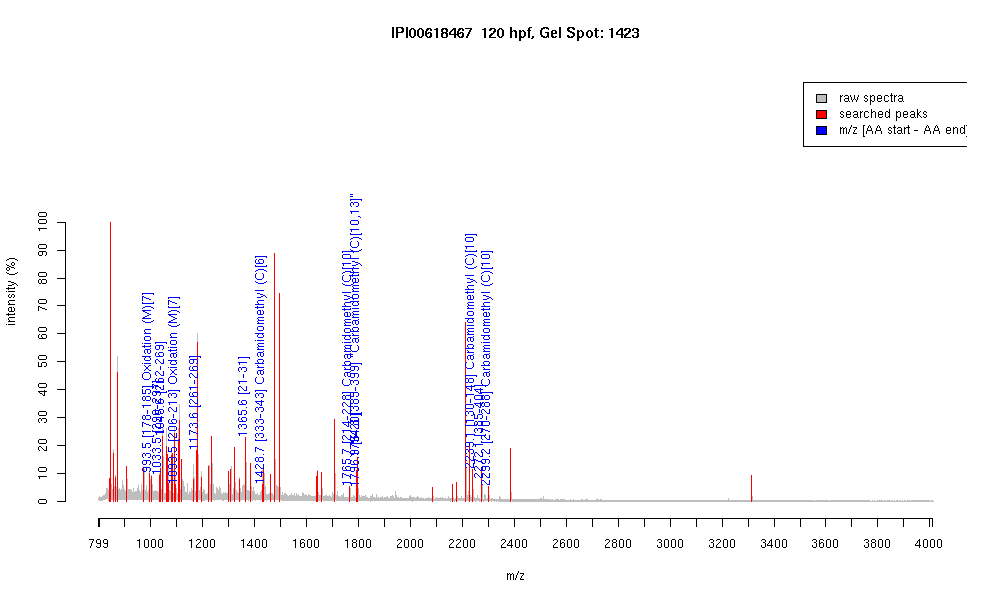

| Name | PREDICTED: similar to zinc finger protein420 |
|---|---|
| MW | 65734.5 |
| PI | 9.14 |
| Mascot Protein Score | 69 |
| Masses (matched / unmatched) | 13 / 59 |

| Peptide | MZ (calc) | MZ (observed) | Error (DA) | Error (PPM) | Start | Stop | Modifications |
|---|---|---|---|---|---|---|---|
| QHLVGHMR | 993.5046 | 993.5001 | -0.0045 | -5 | 178 | 185 | Oxidation (M)[7] |
| RYLTGHMR | 1033.536 | 1033.5193 | -0.0167 | -16 | 290 | 297 | |
| QYLTEHVR | 1045.5425 | 1045.5652 | 0.0227 | 22 | 262 | 269 | |
| QYLTEHMR | 1093.5095 | 1093.5269 | 0.0174 | 16 | 206 | 213 | Oxidation (M)[7] |
| KQYLTEHVR | 1173.6375 | 1173.6365 | -0.001 | -1 | 261 | 269 | |
| QEETEEAFRVK | 1365.6644 | 1365.6458 | -0.0186 | -14 | 21 | 31 | |
| QKLYTCQQCEK | 1428.661 | 1428.7245 | 0.0635 | 44 | 333 | 343 | Carbamidomethyl (C)[6] |
| IHTGEQLYTCQQCGK | 1765.7996 | 1765.745 | -0.0546 | -31 | 214 | 228 | Carbamidomethyl (C)[10] |
| SHTGDQLYICQQCGK | 1794.7898 | 1794.8157 | 0.0259 | 14 | 385 | 399 | "Carbamidomethyl (C)[10,13]" |
| EESEDIKIEETFTVK | 1796.88 | 1796.8622 | -0.0178 | -10 | 6 | 20 | |
| IHTGEKPYTCQQCGNSFIR | 2239.0383 | 2239.1345 | 0.0962 | 43 | 130 | 148 | Carbamidomethyl (C)[10] |
| SHTGDQLYICQQCGKSFTQK | 2272.0486 | 2272.1458 | 0.0972 | 43 | 385 | 404 | |
| IHTGEKPYSCQQCEKSFTR | 2299.0593 | 2299.1707 | 0.1114 | 48 | 270 | 288 | Carbamidomethyl (C)[10] |